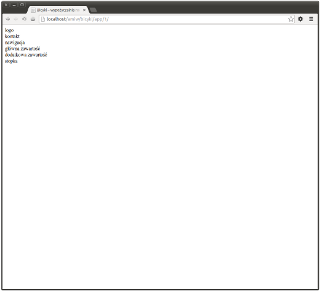
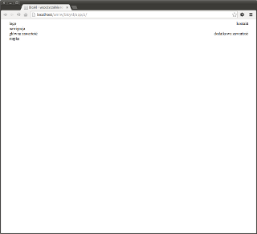
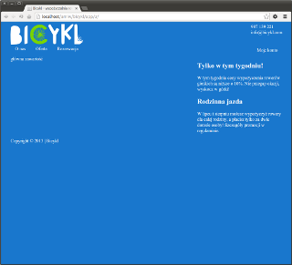
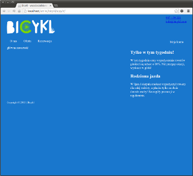
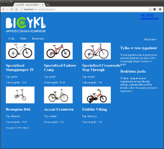
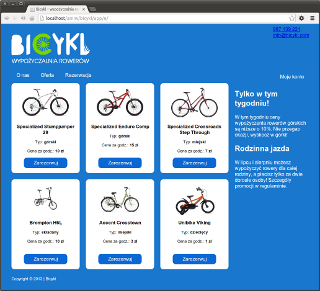
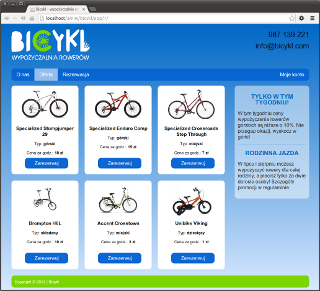
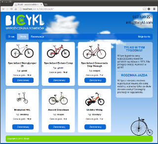

Projekt „Bicykl”
Etap 1. Budowa UI (HTML + CSS)
Rewizja 1. Podstawowa struktura dokumentu
(link do strony)

Rewizja 2. Rozmiary bloków i ich rozmieszczenie
(link do strony)

Rewizja 3. Wstawianie i podział treści
(link do strony)

Rewizja 4. Więcej semantyki
(link do strony)

Rewizja 5. Główna zawartość – kafelki
(link do strony)

Rewizja 6. Wizualne style
(link do strony)

Rewizja 7. Wizualnych stylów ciąg dalszy
(link do strony)

Rewizja 8. Bajery – chmury i bicykl
(link do strony)
